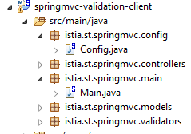
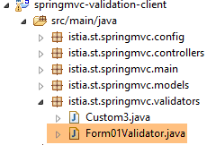
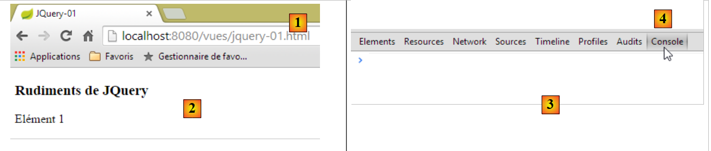
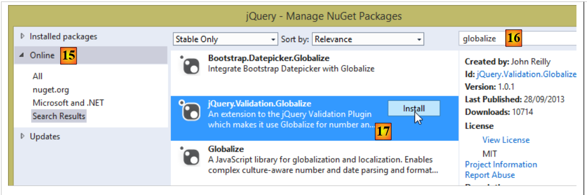
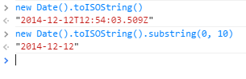
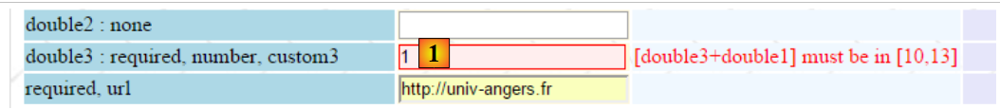

6. 客户端 JavaScript 验证
在上一章中，我们探讨了服务器端验证。现在让我们回到 Spring MVC 应用程序的架构：
 |
数据库
到目前为止，发送给客户端的页面中尚未包含任何 JavaScript。现在我们将探讨这项技术，它将首先使我们能够进行客户端验证。其原理如下：
- JavaScript 将数据值发送至 Web 服务器；
- 因此，在执行此 POST 请求之前，它可以检查数据的有效性，并在数据无效时阻止 POST 操作；
我们将使用之前在服务器端进行过验证的表单。现在，我们将提供同时在客户端和服务器端进行验证的选项。
注：这是一个复杂的主题。对该主题不感兴趣的读者可直接跳至第7段。
6.1. 项目功能
我们将展示该项目的几个视图，以介绍其功能。可通过 URL [http://localhost:8080/js01.html] 访问初始页面
 |
已在客户端和服务器端两端都实现了验证。由于只有在客户端判定值有效时才会发送 POST 请求，因此服务器端的验证总是成功的。因此，我们提供了一个链接用于禁用客户端验证。在此模式下，行为与我们之前研究的一致。以下是一个示例：
123  |
- 在 [1] 中，输入的值；
- 在 [2] 中，与输入项相关的错误信息；
- 在 [3] 中，显示错误摘要，其中每条错误包含以下内容：
- 已验证字段的名称，
- 错误代码，
- 该错误代码的默认提示信息；
现在，让我们启用客户端验证：
 |
- 在 [1] 中，显示输入的值。请注意，错误的输入具有特定的样式；
- 在 [2] 中，显示与错误输入相关的错误信息。这些信息与服务器生成的完全一致；
- 在 [3-4] 中，此处为空，因为只要存在错误输入，向服务器的 POST 请求就不会发生；
6.2. 服务器端验证
6.2.1. 配置
首先，我们创建一个新的 Maven 项目 [springmvc-validation-client]：
 |
我们按以下步骤开发该项目：
 |
[Config] 类用于配置项目。它与之前项目中的配置完全相同：
package istia.st.springmvc.config;
import java.util.Locale;
import org.springframework.boot.autoconfigure.EnableAutoConfiguration;
import org.springframework.context.MessageSource;
import org.springframework.context.annotation.Bean;
import org.springframework.context.annotation.ComponentScan;
import org.springframework.context.annotation.Configuration;
import org.springframework.context.support.ResourceBundleMessageSource;
import org.springframework.web.servlet.config.annotation.InterceptorRegistry;
import org.springframework.web.servlet.config.annotation.WebMvcConfigurerAdapter;
import org.springframework.web.servlet.i18n.CookieLocaleResolver;
import org.springframework.web.servlet.i18n.LocaleChangeInterceptor;
import org.thymeleaf.spring4.SpringTemplateEngine;
import org.thymeleaf.spring4.templateresolver.SpringResourceTemplateResolver;
@Configuration
@ComponentScan({ "istia.st.springmvc.controllers", "istia.st.springmvc.models" })
@EnableAutoConfiguration
public class Config extends WebMvcConfigurerAdapter {
@Bean
public MessageSource messageSource() {
ResourceBundleMessageSource messageSource = new ResourceBundleMessageSource();
messageSource.setBasename("i18n/messages");
return messageSource;
}
@Bean
public LocaleChangeInterceptor localeChangeInterceptor() {
LocaleChangeInterceptor localeChangeInterceptor = new LocaleChangeInterceptor();
localeChangeInterceptor.setParamName("lang");
return localeChangeInterceptor;
}
@Override
public void addInterceptors(InterceptorRegistry registry) {
registry.addInterceptor(localeChangeInterceptor());
}
@Bean
public CookieLocaleResolver localeResolver() {
CookieLocaleResolver localeResolver = new CookieLocaleResolver();
localeResolver.setCookieName("lang");
localeResolver.setDefaultLocale(new Locale("fr"));
return localeResolver;
}
@Bean
public SpringResourceTemplateResolver templateResolver() {
SpringResourceTemplateResolver templateResolver = new SpringResourceTemplateResolver();
templateResolver.setPrefix("classpath:/templates/");
templateResolver.setSuffix(".xml");
templateResolver.setTemplateMode("HTML5");
templateResolver.setCacheable(true);
templateResolver.setCharacterEncoding("UTF-8");
return templateResolver;
}
@Bean
SpringTemplateEngine templateEngine(SpringResourceTemplateResolver templateResolver) {
SpringTemplateEngine templateEngine = new SpringTemplateEngine();
templateEngine.setTemplateResolver(templateResolver);
return templateEngine;
}
}
[Main] 类是该项目的可执行类：
package istia.st.springmvc.main;
import istia.st.springmvc.config.Config;
import java.util.Arrays;
import org.springframework.boot.SpringApplication;
import org.springframework.context.ApplicationContext;
public class Main {
public static void main(String[] args) {
// launch the application
ApplicationContext context = SpringApplication.run(Config.class, args);
// displays the list of beans found by Spring
System.out.println("Liste des beans Spring");
String[] beanNames = context.getBeanDefinitionNames();
Arrays.sort(beanNames);
for (String beanName : beanNames) {
System.out.println(beanName);
}
}
}
- 第 13 行：Spring Boot 通过 [Config] 配置文件启动；
- 第 15–20 行：在此示例中，我们将演示如何显示 Spring 管理的对象列表。如果您曾怀疑 Spring 未管理某个组件，这将非常有用。这是验证此情况的一种方法，也是验证 Spring Boot 自动配置的一种方式。在控制台上，您将看到类似于以下内容的列表：
我们已突出显示了在 [Config] 类中定义的对象。
6.2.2. 表单模型
让我们继续探索该项目：
 |
[Form01] 类是用于接收提交值的类。其定义如下：
package istia.st.springmvc.models;
import java.util.Date;
import javax.validation.constraints.AssertFalse;
import javax.validation.constraints.AssertTrue;
import javax.validation.constraints.DecimalMax;
import javax.validation.constraints.DecimalMin;
import javax.validation.constraints.Future;
import javax.validation.constraints.Max;
import javax.validation.constraints.Min;
import javax.validation.constraints.NotNull;
import javax.validation.constraints.Past;
import javax.validation.constraints.Pattern;
import javax.validation.constraints.Size;
import org.hibernate.validator.constraints.Email;
import org.hibernate.validator.constraints.Length;
import org.hibernate.validator.constraints.NotBlank;
import org.hibernate.validator.constraints.Range;
import org.hibernate.validator.constraints.URL;
import org.springframework.format.annotation.DateTimeFormat;
public class Form01 {
// posted values
@NotNull
@AssertFalse
private Boolean assertFalse;
@NotNull
@AssertTrue
private Boolean assertTrue;
@NotNull
@Future
@DateTimeFormat(pattern = "yyyy-MM-dd")
private Date dateInFuture;
@NotNull
@Past
@DateTimeFormat(pattern = "yyyy-MM-dd")
private Date dateInPast;
@NotNull
@Max(value = 100)
private Integer intMax100;
@NotNull
@Min(value = 10)
private Integer intMin10;
@NotNull
@NotBlank
private String strNotEmpty;
@NotNull
@Size(min = 4, max = 6)
private String strBetween4and6;
@NotNull
@Pattern(regexp = "^\\d{2}:\\d{2}:\\d{2}$")
private String hhmmss;
@NotNull
@Email
@NotBlank
private String email;
@NotNull
@Length(max = 4, min = 4)
private String str4;
@Range(min = 10, max = 14)
@NotNull
private Integer int1014;
@NotNull
@DecimalMax(value = "3.4")
@DecimalMin(value = "2.3")
private Double double1;
@NotNull
private Double double2;
@NotNull
private Double double3;
@URL
@NotBlank
private String url;
// customer validation
private boolean clientValidation = true;
// local
private String lang;
...
}
我们看到了之前遇到过的验证器。我们还将介绍自定义验证的概念。这是一种无法由预定义验证器处理的验证类型。在此，我们将要求 [double1+double2] 必须在 [10,13] 范围内。
6.2.3. 控制器
控制器 [JsController] 如下所示：
 |
package istia.st.springmvc.controllers;
import istia.st.springmvc.models.Form01;
...
@Controller
public class JsController {
@RequestMapping(value = "/js01", method = RequestMethod.GET, produces = "text/html; charset=UTF-8")
public String js01(Form01 formulaire, Locale locale, Model model) {
setModel(formulaire, model, locale, null);
return "vue-01";
}
...
// preparing the view-01 model
private void setModel(Form01 formulaire, Model model, Locale locale, String message) {
...
}
}
- 第 9 行，操作 [/js01]；
- 第 10 行：实例化一个类型为 [Form01] 的对象，并自动将其放入模型中，关联键 [form01]；
- 第 10 行：将区域设置和模型注入到参数中；
- 第 11 行：利用这些信息，准备模型；
- 第 12 行：显示视图 [vue-01.xml]；
[setModel] 方法如下：
// preparing the view-01 model
private void setModel(Form01 formulaire, Model model, Locale locale, String message) {
// we only manage fr-FR, en-US locales
String language = locale.getLanguage();
String country = null;
if (language.equals("fr")) {
country = "FR";
formulaire.setLang("fr_FR");
}
if (language.equals("en")) {
country = "US";
formulaire.setLang("en_US");
}
model.addAttribute("locale", String.format("%s-%s", language, country));
// any message
if (message != null) {
model.addAttribute("message", message);
}
}
- [setModel] 方法的目的是向模型中添加以下内容：
- 有关区域设置的信息，
- 作为最后一个参数传递的消息；
- 第 14 行：我们将区域设置信息（语言、国家）放入模型中；
- 第 16–18 行：作为参数传递的任何消息都会被放入区域设置中；
- 第 8、12 行：区域设置信息也会存储在 [Form01] 表单中。JavaScript 将使用这些信息；
在 [vue-01.xml] 表单中输入的值将提交至以下 [/js02] 操作：
@RequestMapping(value = "/js02", method = RequestMethod.POST, produces = "text/html; charset=UTF-8")
public String js02(@Valid Form01 formulaire, BindingResult result, RedirectAttributes redirectAttributes, Locale locale, Model model) {
Form01Validator validator = new Form01Validator(10, 13);
validator.validate(formulaire, result);
...
}
- 第 2 行：注解 [@Valid Form01 form] 确保提交的值将传递给 [Form01] 类的验证器。我们知道其中包含一项特定的 [double1+double2] 验证，其范围为 [10,13]。当执行到第 3 行时，此验证尚未执行；
- 第 3 行：我们创建以下 [Form01Validator] 对象：
 |
package istia.st.springmvc.validators;
import istia.st.springmvc.models.Form01;
import org.springframework.validation.Errors;
import org.springframework.validation.Validator;
public class Form01Validator implements Validator {
// validation interval
private double min;
private double max;
// manufacturer
public Form01Validator(double min, double max) {
this.min = min;
this.max = max;
}
@Override
public boolean supports(Class<?> classe) {
return Form01.class.equals(classe);
}
@Override
public void validate(Object form, Errors errors) {
// validated object
Form01 form01 = (Form01) form;
// the value of [double1]
Double double1 = form01.getDouble1();
if (double1 == null) {
return;
}
// the value of [double2]
Double double2 = form01.getDouble2();
if (double2 == null) {
return;
}
// [double1+double2]
double somme = double1 + double2;
// validation
if (somme < min || somme > max) {
errors.rejectValue("double2", "form01.double2", new Double[] { min, max }, null);
}
}
}
- 第 8 行：要实现特定的验证，我们需要创建一个实现 Spring [Validator] 接口的类。该接口包含两个方法：第 21 行的 [supports] 和第 26 行的 [validate]；
- 第 21–23 行：[supports] 方法接受一个 [Class] 类型的对象。它必须返回 true 来表示支持该类，否则返回 false；
- 第 22 行：我们指定 [Form01Validator] 类仅对 [Form01] 类型的对象进行验证；
- 第 15–18 行：回顾一下，我们希望在 [10,13] 区间内实现 [double1+double2] 约束。与其将自己局限于这个区间，我们将检查 [min, max] 区间内的 [double1+double2] 约束。这就是为什么我们有一个带有这两个参数的构造函数；
- 第 26 行：调用 [validate] 方法时，传入待验证对象的实例（本例中为 [Form01] 实例）以及当前已知的错误集合 [Errors errors]。如果 [validate] 方法执行的验证失败，则必须在 [Errors errors] 集合中创建一个新元素；
- 第 43 行：验证失败。我们使用 [Errors.rejectValue] 方法向 [Errors errors] 集合添加一个元素，其参数如下：
- 参数 1：通常是出现错误的字段名称。此处我们已测试了字段 [double1, double2]。我们可以使用其中任意一个，
- 关联的错误消息，或者更准确地说，是其在外部化消息文件中的键：
[messages_fr.properties]
form01.double2=[double2+double1] doit être dans l''intervalle [{0},{1}]
[messages_en.properties]
form01.double2=[double2+double1] must be in [{0},{1}
这里有通过 {0} 和 {1} 参数化的消息。因此，必须为该消息提供两个值。这就是 [Errors.rejectValue] 方法的第三个参数的作用。
- 第四个参数是该错误的默认消息；
让我们回到 [/js02] 操作：
@RequestMapping(value = "/js02", method = RequestMethod.POST, produces = "text/html; charset=UTF-8")
public String js02(@Valid Form01 formulaire, BindingResult result, RedirectAttributes redirectAttributes, Locale locale, Model model) {
Form01Validator validator = new Form01Validator(10, 13);
validator.validate(formulaire, result);
if (result.hasErrors()) {
StringBuffer buffer = new StringBuffer();
for (ObjectError error : result.getAllErrors()) {
buffer.append(String.format("[name=%s,code=%s,message=%s]", error.getObjectName(), error.getCode(), error.getDefaultMessage()));
}
setModel(formulaire, model, locale, buffer.toString());
return "vue-01";
} else {
redirectAttributes.addFlashAttribute("form01", formulaire);
return "redirect:/js01.html";
}
}
- 第 4 行：验证器 [Form01Validator] 带以下参数执行：
- 参数 1：待验证的对象，
- 参数 2：该对象的错误列表。这是作为参数传递给操作的 [BindingResult result] 对象。如果验证失败，该对象将多一个错误；
- 第 5 行：检查是否存在任何验证错误；
- 第 7–10 行：遍历错误列表，针对每个错误存储以下信息：
- 被验证对象的名称，
- 其错误代码，
- 其默认错误信息；
- 第 10 行：利用这些信息，我们构建视图模板 [vue-01.xml]。这次，模板中包含一条消息——即各种错误消息拼接并简化的版本；
- 第 12–15 行：如果所有提交的值都有效，则将提交的值设置为 Flash 属性，并将客户端重定向到 [/js01] 操作；
6.2.4. 视图
视图 [view-01.xml] 较为复杂。我们仅展示其中一小部分：
<!DOCTYPE HTML>
<html xmlns:th="http://www.thymeleaf.org">
<head>
<title>Spring 4 MVC</title>
<meta http-equiv="Content-Type" content="text/html; charset=UTF-8" />
<link rel="stylesheet" href="/css/form01.css" />
<script type="text/javascript" src="/js/jquery/jquery-1.10.2.min.js"></script>
...
</head>
<body>
<!-- title -->
<h3>
<span th:text="#{form01.title}"></span>
<span th:text="${locale}"></span>
</h3>
<!-- menu -->
<p>
...
</p>
<!-- form -->
<form action="/someURL" th:action="@{/js02.html}" method="post" th:object="${form01}" name="form" id="form">
<table>
<thead>
<tr>
<th class="col1" th:text="#{form01.col1}">Contrainte</th>
<th class="col2" th:text="#{form01.col2}">Saisie</th>
<th class="col3" th:text="#{form01.col3}">Validation client</th>
<th class="col4" th:text="#{form01.col4}">Validation serveur</th>
</tr>
</thead>
<tbody>
<!-- required -->
<tr>
<td class="col1">required</td>
<td class="col2">
<input type="text" th:field="*{strNotEmpty}" data-val="true" th:attr="data-val-required=#{NotNull}" />
</td>
<td class="col3">
<span class="field-validation-valid" data-valmsg-for="strNotEmpty" data-valmsg-replace="true"></span>
</td>
<td class="col4">
<span th:if="${#fields.hasErrors('strNotEmpty')}" th:errors="*{strNotEmpty}" class="error">Donnée erronée</span>
</td>
</tr>
...
</tbody>
</table>
<p>
<!-- validation button -->
<input type="submit" th:value="#{form01.valider}" value="Valider" onclick="javascript:postForm01()" />
</p>
</form>
<!-- server-side validator message -->
<br/>
<fieldset class="fieldset">
<legend>
<span th:text="#{server.error.message}"></span>
</legend>
<span th:text="${message}" class="error"></span>
</fieldset>
</body>
</html>
本页面使用了外部化消息文件中的一些消息：
[messages_fr.properties]
form01.title=Formulaire - Validations côté client - locale=
form01.col1=Contrainte
form01.col2=Saisie
form01.col3=Validation client
form01.col4=Validation serveur
form01.valider=Valider
server.error.message=Erreurs détectées par les validateurs côté serveur
[messages_en.properties]
form01.title=Form - Client side validation - locale=
form01.col1=Constraint
form01.col2=Input
form01.col3=Client validation
form01.col4=Server validation
form01.valider=Validate
server.error.message=Errors detected by the validators on the server side
让我们回到页面代码：
- 第 8 行：大量 JavaScript 库导入，此处可忽略；
- 第 14 行：显示服务器在模板中设置的区域设置；
- 第 59 行：显示服务器在模板中设置的消息；
第 33–44 行的代码是新增的。让我们来分析一下：
<!-- required -->
<tr>
<td class="col1">required</td>
<td class="col2">
<input type="text" th:field="*{strNotEmpty}" data-val="true" th:attr="data-val-required=#{NotNull}" />
</td>
<td class="col3">
<span class="field-validation-valid" data-valmsg-for="strNotEmpty" data-valmsg-replace="true"></span>
</td>
<td class="col4">
<span th:if="${#fields.hasErrors('strNotEmpty')}" th:errors="*{strNotEmpty}" class="error">Donnée erronée</span>
</td>
</tr>
最简单的方法可能是查看此 Thymeleaf 片段生成的 HTML 代码：
<!-- required -->
<tr>
<td class="col1">required</td>
<td class="col2">
<input type="text" data-val="true" data-val-required="Le champ est obligatoire" id="strNotEmpty" name="strNotEmpty" value="" />
</td>
<td class="col3">
<span class="field-validation-valid" data-valmsg-for="strNotEmpty" data-valmsg-replace="true"></span>
</td>
<td class="col4">
</td>
</tr>
我们将使用一个名为 [jquery.validate] 的客户端验证库。所有 [data-x] 属性都是为该库准备的。当客户端验证被禁用时，这些属性将不会被使用。因此，目前无需理解它们。我们可以直接关注以下 Thymeleaf 代码行：
<input type="text" th:field="*{strNotEmpty}" data-val="true" th:attr="data-val-required=#{NotNull}" />
该代码会生成以下 HTML 代码：
<input type="text" data-val="true" data-val-required="Le champ est obligatoire" id="strNotEmpty" name="strNotEmpty" value="" />
如上所述，生成 [data-val-required="此字段为必填项"] 属性时存在一个问题。这是因为该属性的值来自外部消息文件。因此，我们不得不使用 Thymeleaf 表达式来获取该值。该表达式如下：[th:attr="data-val-required=#{NotNull}"]。 该表达式经过求值后，其结果会原样插入到生成的 HTML 标签中。之所以称为 [th:attr]，是因为它用于生成 Thymeleaf 中未预定义的属性。我们曾遇到过预定义属性 [th:text、th:value、th:class 等]，但并不存在 [th:data-val-required] 属性。
6.2.5. 样式表
在上文中，我们可以看到诸如 [class="field-validation-valid"] 之类的 CSS 类。其中一些类由 JavaScript 验证库使用。它们在以下 [form01.css] 文件中定义：
 |
@CHARSET "UTF-8";
/*styles perso*/
body {
background-image: url("/images/standard.jpg");
}
.col1 {
background: lightblue;
}
.col2 {
background: Cornsilk;
}
.col3 {
background: AliceBlue;
}
.col4 {
background: Lavender;
}
.error {
color: red;
}
.fieldset{
background: Lavender;
}
/* Styles for validation helpers
-----------------------------------------------------------*/
.field-validation-error {
color: #f00;
}
.field-validation-valid {
display: none;
}
.input-validation-error {
border: 1px solid #f00;
background-color: #fee;
}
.validation-summary-errors {
font-weight: bold;
color: #f00;
}
.validation-summary-valid {
display: none;
}
6.3. 客户端验证
6.3.1. jQuery 和 JavaScript 基础
客户端验证是通过 JavaScript 实现的。我们将使用 jQuery 框架，它提供了许多简化 JavaScript 开发的函数。本章及后续章节将介绍理解相关脚本所需的 jQuery 基础知识。
我们创建一个静态 HTML 文件 [JQuery-01.html]，并将其放置在 [static / views] 文件夹中：
 |
该文件的内容如下：
<!DOCTYPE html>
<html xmlns="http://www.w3.org/1999/xhtml">
<head>
<meta http-equiv="Content-Type" content="text/html; charset=utf-8" />
<title>JQuery-01</title>
<script type="text/javascript" src="/js/jquery-1.11.1.min.js"></script>
</head>
<body>
<h3>Rudiments de JQuery</h3>
<div id="element1">
Elément 1
</div>
</body>
</html>
- 第 6 行：导入 jQuery；
- 第10–12行：一个ID为[element1]的页面元素。我们将对该元素进行操作。
我们需要下载文件 [jquery-1.11.1.min.js]。您可以在网址 [http://jquery.com/download/] 上找到 jQuery 的最新版本：

我们将下载的文件放置在 [static / js] 文件夹中：
 |
完成后，在 Chrome 中打开静态视图 [jQuery-01.html] [1-2]：
 |
在 Google Chrome 中，按 [Ctrl-Shift-I] 打开开发者工具 [3]。[控制台] 选项卡 [4] 允许您运行 JavaScript 代码。下面，我们将提供需要输入的 JavaScript 命令并解释其作用。
JS | 结果 |
|
: 返回所有 ID 为 [element1] 的元素集合，通常包含 0 或 1 个元素，因为 HTML 页面上不能存在两个完全相同的 ID。 |  |
|
: 将集合中所有元素的文本设置为 [blabla]。这会更改页面上显示的内容 |  |
|
将集合中的元素隐藏。文本 [blabla] 不再显示。 |  |
|
：再次显示集合。这让我们可以看到，ID 为 [element1] 的元素具有 CSS 属性 style='display: none;'，这会导致该元素被隐藏。 | |
|
：显示集合中的元素。文本 [blabla] 再次出现。这归功于 CSS 属性 style='display: block;'。 |  |
|
：为集合中的所有元素设置属性。此处的属性是 [style]，其值为 [color: red]。文本 [blabla] 变为红色。 |  |
 | |
 |
请注意，在所有这些操作过程中，浏览器的 URL 都没有发生变化。没有与 Web 服务器进行通信。所有操作都在浏览器内部完成。现在，让我们查看该页面的源代码：
<!DOCTYPE html>
<html xmlns="http://www.w3.org/1999/xhtml">
<head>
<meta http-equiv="Content-Type" content="text/html; charset=utf-8" />
<title>JQuery-01</title>
<script type="text/javascript" src="/js/jquery-1.11.1.min.js"></script>
</head>
<body>
<h3>Rudiments de JQuery</h3>
<div id="element1">
Elément 1
</div>
</body>
</html>
这是原始文本。它并未反映第 10–12 行对该元素所做的更改。在调试 JavaScript 时，务必牢记这一点。在这种情况下，通常无需查看显示页面的源代码。
现在我们已掌握足够知识，可以理解下文的 JavaScript 脚本了。
6.3.2. JS 验证库
我们将使用来自 jQuery 生态系统的库。许多项目围绕 jQuery 展开，进而衍生出各种库。我们将使用由微软创建并捐赠给 jQuery 基金会的验证库 [jquery.validate.unobstrusive]。下文我们将称其为 MS 验证库，或更简称为 MS 库。要获取它，你需要一个 Microsoft Visual Studio 环境。 我尚未发现其他获取途径。您可以使用免费版本，例如 [Visual Studio Community] [http://www.visualstudio.com/en-us/news/vs2013-community-vs.aspx]（2014年12月版）。若读者不愿按照以下步骤操作，可从本文档网站提供的示例中获取该库及其依赖库。
使用 Visual Studio 创建一个控制台项目 [1-4]：
|


 |
- 在 [5] 中，即控制台项目；
- 在 [6-7] 中：我们将向项目中添加 [NuGet] 包。[NuGet] 是 Visual Studio 的一项功能，允许您下载 DLL 格式的库以及 JavaScript 库。
 |
- 在 [9-10] 中，使用关键词 [jQuery] 进行搜索；
- 在 [11-13] 中，按所示顺序下载客户端验证所需的 JavaScript 库；
- 在 [14] 中，还请下载 [Microsoft jQuery Unobtrusive Ajax] 库，我们稍后将用到它；
 |
- 在 [15-16] 中，使用关键词 [globalize] 搜索相关包；
- 在[17]中，下载[jQuery.Validation.Globalize]库；
 |
这些下载操作已在项目 [18] 的 [Scripts] 文件夹中安装了多个 JavaScript 库。其中并非所有都实用。每个文件都有两个版本：
- [js]：库的可读版本；
- [min.js]：库的不可读版本，即所谓的“压缩”版本。它并非真正不可读——毕竟是文本——但内容难以理解。生产环境中应使用此版本，因为该文件比对应的 [js] 版本更小，从而能提升客户端与服务端之间的通信速度；
[min.map] 版本并非必需。在 [cultures] 文件夹中，您只需保留应用程序管理的语言环境即可。
使用 Windows 资源管理器，将这些文件复制到 [springmvc-validation-client] 项目的 [static/js/jquery] 文件夹中，并仅保留有用的文件 [20]：
 |
在 [21] 中，仅保留两个语言环境：
- [fr-FR]：法语（法国）；
- [en-US]：美式英语；
6.3.3. 导入验证 JavaScript 库
要使用这些库，必须通过 [vue-01.xml] 视图将其导入：
<head>
<title>Spring 4 MVC</title>
<meta http-equiv="Content-Type" content="text/html; charset=UTF-8" />
<link rel="stylesheet" href="/css/form01.css" />
<script type="text/javascript" src="/js/jquery/jquery-2.1.1.min.js"></script>
<script type="text/javascript" src="/js/jquery/jquery.validate.min.js"></script>
<script type="text/javascript" src="/js/jquery/jquery.validate.unobtrusive.min.js"></script>
<script type="text/javascript" src="/js/jquery/globalize/globalize.js"></script>
<script type="text/javascript" src="/js/jquery/globalize/cultures/globalize.culture.fr-FR.js"></script>
<script type="text/javascript" src="/js/jquery/globalize/cultures/globalize.culture.en-US.js"></script>
<script type="text/javascript" src="/js/client-validation.js"></script>
<script type="text/javascript" src="/js/local.js"></script>
<script th:inline="javascript">
/*<![CDATA[*/
var culture = [[${locale}]];
Globalize.culture(culture);
/*]]>*/
</script>
</head>
- 第 11 行：导入一个我们尚未讨论过的 JavaScript 文件；
- 第13–18行：由Thymelaf解释执行的JavaScript脚本。它负责处理客户端区域设置；
6.3.4. 客户端区域设置管理
客户端本地化由以下 JavaScript 脚本处理：
<script th:inline="javascript">
/*<![CDATA[*/
var culture = [[${locale}]];
Globalize.culture(culture);
/*]]>*/
</script>
- 第 3-4 行：包含 Thymeleaf 表达式 [[${locale}]] 的 JavaScript 代码。请注意该表达式的特定语法，因为它是用 JavaScript 编写的。表达式 [[${locale}]] 将被视图模板中 [locale] 键的值替换；
这些代码生成的 HTML 输出结果如下：
<script>
/*<![CDATA[*/
var culture = 'en-US';
Globalize.culture(culture);
/*]]>*/
</script>
第 3-4 行设置了客户端的区域设置。我们仅支持两种：[fr-FR] 和 [en-US]。这就是为什么我们只导入了两个区域设置文件：
<script type="text/javascript" src="/js/jquery/globalize/cultures/globalize.culture.fr-FR.js"></script>
<script type="text/javascript" src="/js/jquery/globalize/cultures/globalize.culture.en-US.js"></script>
客户端使用的语言环境是在服务器端设置的。让我们回到服务器端的代码：
@RequestMapping(value = "/js01", method = RequestMethod.GET, produces = "text/html; charset=UTF-8")
public String js01(Form01 formulaire, Locale locale, Model model) {
setModel(formulaire, model, locale, null);
return "vue-01";
}
// preparing the view-01 model
private void setModel(Form01 formulaire, Model model, Locale locale, String message) {
// we only manage fr-FR, en-US locales
String language = locale.getLanguage();
String country = null;
if (language.equals("fr")) {
country = "FR";
formulaire.setLang("fr_FR");
}
if (language.equals("en")) {
country = "US";
formulaire.setLang("en_US");
}
model.addAttribute("locale", String.format("%s-%s", language, country));
...
}
- 第 20 行：区域设置 [fr-FR] 或 [en-US] 在视图模板 [vue-01.xml]（第 4 行）中设置。 请注意一个可能引发问题的细节。虽然客户端将法语区域设置表示为 [fr-FR]，但在服务器端则表示为 [fr_FR]。这就是为什么在第 14 行和第 18 行中，接收提交值的 [Form01] 对象会以这种形式存储该值；
请注意以下重要事项。脚本
<script>
/*<![CDATA[*/
var culture = 'en-US';
Globalize.culture(culture);
/*]]>*/
</script>
根据服务器发送的区域设置更改客户端的文化。这不会使页面上显示的消息国际化，仅改变某些依赖于国家文化的信息的解释方式。在 [fr_FR] 文化中，实数 [12.78] 是有效的，而在 [en-US] 文化中则无效。 因此，您必须写成 [12.78]。同样，日期 [12/01/2014] 在 [fr-FR] 文化中是有效的，而在 [en-US] 文化中则必须写成 [01/12/2014]。[jquery / globalize] 文件夹中的文件负责处理此类问题：
 |
错误消息的国际化完全在服务器端处理。我们将看到，HTML/JS 页面会显示与服务器管理的语言环境相对应的错误消息：对于 [fr_FR] 语言环境显示法语，对于 [en_US] 语言环境显示英语。
6.3.5. 消息文件
[vue-01.xml] 视图使用了以下国际化消息：
 |
[messages_fr.properties]
NotNull=Le champ est obligatoire
NotEmpty=La donnée ne peut être vide
NotBlank=La donnée ne peut être vide
typeMismatch=Format invalide
Future.form01.dateInFuture=La date doit être postérieure ou égale à celle d''aujourd'hui
Past.form01.dateInPast=La date doit être antérieure ou égale à celle d''aujourd'hui
Min.form01.intMin10=La valeur doit être supérieure ou égale à 10
Max.form01.intMax100=La valeur doit être inférieure ou égale à 100
Size.form01.strBetween4and6=La chaîne doit avoir entre 4 et 6 caractères
Length.form01.str4=La chaîne doit avoir quatre caractères exactement
Email.form01.email=Adresse mail invalide
URL.form01.url=URL invalide
Range.form01.int1014=La valeur doit être dans l''intervalle [10,14]
AssertTrue=Seule la valeur True est acceptée
AssertFalse=Seule la valeur False est acceptée
Pattern.form01.hhmmss=Tapez l''heure sous la forme hh:mm:ss
form01.hhmmss.pattern=^\\d{2}:\\d{2}:\\d{2}$
DateInvalide.form01=Date invalide
form01.str4.pattern=^.{4,4}$
form01.int1014.max=14
form01.int1014.min=10
form01.strBetween4and6.pattern=^.{4,6}$
form01.intMax100.value=100
form01.intMin10.value=10
form01.double1.min=2.3
form01.double1.max=3.4
Range.form01.double1=La valeur doit être dans l'intervalle [2,3-3,4]
form01.title=Formulaire - Validations côté client - locale=
form01.col1=Contrainte
form01.col2=Saisie
form01.col3=Validation client
form01.col4=Validation serveur
form01.valider=Valider
form01.double2=[double2+double1] doit être dans l''intervalle [{0},{1}]
form01.double3=[double3+double1] doit être dans l''intervalle [{0},{1}]
locale.fr=Français
locale.en=English
client.validation.true=Activer la validation client
client.validation.false=Inhiber la validation client
DecimalMin.form01.double1=Le nombre doit être supérieur ou égal à 2,3
DecimalMax.form01.double1=Le nombre doit être inférieur ou égal à 3,4
server.error.message=Erreurs détectées par les validateurs côté serveur
[messages_en.properties]
NotNull=Field is required
NotEmpty=Field can''t be empty
NotBlank=Field can''t be empty
typeMismatch=Invalid format
Future.form01.dateInFuture=Date must be greater or equal to today''s date
Past.form01.dateInPast=Date must be lower or equal today''s date
Min.form01.intMin10=Value must be higher or equal to 10
Max.form01.intMax100=Value must be lower or equal to 100
Size.form01.strBetween4and6=String must have between 4 and 6 characters
Length.form01.str4=String must be exactly 4 characters long
Email.form01.email=Invalid mail address
URL.form01.url=Invalid URL
Range.form01.int1014=Value must be in [10,14]
AssertTrue=Only value True is allowed
AssertFalse=Only value False is allowed
Pattern.form01.hhmmss=Time must follow the format hh:mm:ss
form01.hhmmss.pattern=^\\d{2}:\\d{2}:\\d{2}$
DateInvalide.form01=Invalid Date
form01.str4.pattern=^.{4,4}$
form01.int1014.max=14
form01.int1014.min=10
form01.strBetween4and6.pattern=^.{4,6}$
form01.intMax100.value=100
form01.intMin10.value=10
form01.double1.min=2.3
form01.double1.max=3.4
Range.form01.double1=Value must be in [2.3,3.4]
form01.title=Form - Client side validation - locale=
form01.col1=Constraint
form01.col2=Input
form01.col3=Client validation
form01.col4=Server validation
form01.valider=Validate
form01.double2=[double2+double1] must be in [{0},{1}]
form01.double3=[double3+double1] must be in [{0},{1}]
locale.fr=Français
locale.en=English
client.validation.true=Activate client validation
client.validation.false=Inhibate client validation
DecimalMin.form01.double1=Value must be greater or equal to 2.3
DecimalMax.form01.double1=Value must be lower or equal to 3.4
server.error.message=Errors detected by the validators on the server side
[messages.properties] 文件是英文消息文件的副本。最终，除 [fr] 以外的所有语言环境都将使用英文消息。请注意，[messages_fr.properties] 文件适用于所有 [fr_XX] 语言环境，例如 [fr_CA] 或 [fr_FR]。
[vue-01.xml] 视图使用这些消息中的键。若需了解这些键对应的值，请返回本节查找。
6.3.6. 更改语言环境
[vue-01.xml] 视图包含四个链接：
<body>
<!-- title -->
<h3>
<span th:text="#{form01.title}"></span>
<span th:text="${locale}"></span>
</h3>
<!-- menu -->
<p>
<a id="locale_fr" href="javascript:setLocale('fr_FR')">
<span th:text="#{locale.fr}"></span>
</a>
<a id="locale_en" href="javascript:setLocale('en_US')">
<span style="margin-left:30px" th:text="#{locale.en}"></span>
</a>
<a id="clientValidationTrue" href="javascript:setClientValidation(true)">
<span style="margin-left:30px" th:text="#{client.validation.true}"></span>
</a>
<a id="clientValidationFalse" href="javascript:setClientValidation(false)">
<span style="margin-left:30px" th:text="#{client.validation.false}"></span>
</a>
</p>
<!-- form -->
<form action="/someURL" th:action="@{/js02.html}" method="post" th:object="${form01}" name="form" id="form">
...
其中部分内容如下所示 [1]：
 |
让我们来看看这两个允许您将语言环境切换为法语或英语的链接：
<a id="locale_fr" href="javascript:setLocale('fr_FR')">
<span th:text="#{locale.fr}"></span>
</a>
<a id="locale_en" href="javascript:setLocale('en_US')">
<span style="margin-left:30px" th:text="#{locale.en}"></span>
</a>
点击这些链接会触发位于 [local.js] 文件 [2] 中的 JavaScript 脚本的执行。在这两种情况下，都会调用一个名为 [setLocale] 的 JavaScript 函数：
// local
function setLocale(locale) {
// update the locale
lang.val(locale);
// we submit the form - this doesn't trigger the client validators - that's why we haven't inhibited client-side validation
document.form.submit();
}
要理解第 4 行，需要一些背景信息。视图 [vue-01.xml] 包含一个名为 [lang] 的隐藏字段：
<input type="hidden" th:field="*{lang}" th:value="*{lang}" value="true" />
这对应于 [Form01] 中的 [lang] 字段：
// locale
private String lang;
当您希望丰富提交的值时，隐藏字段非常有用。JavaScript 允许您为其赋值，且该值将作为普通用户输入被提交。Thymeleaf 生成的 HTML 代码如下：
<input type="hidden" value="en_US" id="lang" name="lang" />
[value] 参数的值即为生成 HTML 时 [Form01.lang] 字段的当前值。需要特别注意的是 [id="lang"] 节点的 JavaScript 标识符。该标识符将由以下 [] 函数使用：
// global variables
var lang;
// document ready
$(document).ready(function() {
// global references
lang = $("#lang");
});
// local
function setLocale(locale) {
// update the locale
lang.val(locale);
// the form is submitted - for some reason this does not trigger the client's validators
// that's why we didn't inhibit validation
document.form.submit();
}
- 第 5-8 行：JavaScript 函数 [$(document).ready(f)] 是在浏览器加载完服务器发送的整个文档后执行的函数。其参数是一个函数。我们使用 JavaScript 函数 [$(document).ready(f)] 来初始化已加载文档的 JavaScript 环境；
- 第 7 行：表达式 [$("#lang")] 是一个 jQuery 表达式。其值指向具有 [id='lang'] 属性的 DOM 节点；
- 第 2 行：在函数外部声明的变量对所有函数都是全局的。这里的意思是，在 [$(document).ready()] 中初始化的变量 [lang] 在第 11 行的 [setLocale] 函数中也可以使用；
- 第 13 行：修改由 [lang] 标识的节点的 [value] 属性。如果 lang 为 [xx_XX]，则该节点的 HTML 标签变为：
<input type="hidden" value="xx_XX" id="lang" name="lang" />
JavaScript 允许您修改 DOM（文档对象模型）元素的值。
- 第 16 行：[document] 指代 DOM。[document.form] 指代该文档中找到的第一个表单。一个 HTML 文档可以包含多个 <form> 标签，因此可以包含多个表单。 这里我们只有一个。[document.form.submit] 会提交此表单，就像用户点击了一个带有 [type='submit'] 属性的按钮一样。表单值会被提交到哪个操作？要找出答案，请查看 [vue-01.xml] 中的 [form] 标签：
<!-- form -->
<form action="/someURL" th:action="@{/js02.html}" method="post" th:object="${form01}" name="form" id="form">
接收提交值的操作是由 [th:action] 属性指定的。因此，这里对应的操作是 [/js02.html]。请注意，在这个名称中，[.html] 后缀会被移除，最终执行的操作将是 [/js02]。 需要重点理解的是，[lang]节点的新的值[xx_XX]将以[lang=xx_XX]的形式提交。不过，我们已将应用程序配置为拦截[lang]参数，并将其解释为区域设置的变更。因此，在服务器端，区域设置将变为[xx_XX]。让我们来看看即将执行的[/js02]操作：
@RequestMapping(value = "/js02", method = RequestMethod.POST, produces = "text/html; charset=UTF-8")
public String js02(@Valid Form01 formulaire, BindingResult result, RedirectAttributes redirectAttributes, Locale locale, Model model) {
Form01Validator validator = new Form01Validator(10, 13);
validator.validate(formulaire, result);
if (result.hasErrors()) {
StringBuffer buffer = new StringBuffer();
for (ObjectError error : result.getAllErrors()) {
buffer.append(String.format("[name=%s,code=%s,message=%s]", error.getObjectName(), error.getCode(),
error.getDefaultMessage()));
}
setModel(formulaire, model, locale, buffer.toString());
return "vue-01";
} else {
redirectAttributes.addFlashAttribute("form01", formulaire);
return "redirect:/js01.html";
}
}
// preparing the view-01 model
private void setModel(Form01 formulaire, Model model, Locale locale, String message) {
// we only manage fr-FR, en-US locales
String language = locale.getLanguage();
String country = null;
if (language.equals("fr")) {
country = "FR";
formulaire.setLang("fr_FR");
}
if (language.equals("en")) {
country = "US";
formulaire.setLang("en_US");
}
model.addAttribute("locale", String.format("%s-%s", language, country));
...
}
- 第 2 行：[/js02] 操作将接收封装在 [Locale locale] 参数中的新语言环境 [xx_XX]：
- 第 5-12 行：如果提交的任何值无效，则将使用新区域设置 [xx_XX] 显示包含错误消息的视图 [vue-01.xml]。此外，第 11 行在模型中设置了变量 [locale=xx-XX]。在客户端，该值将用于更新客户端的区域设置。我们已描述了此过程；
- 第 14–15 行：如果所有提交的值均有效，则重定向至后续操作 [/js01]：
@RequestMapping(value = "/js01", method = RequestMethod.GET, produces = "text/html; charset=UTF-8")
public String js01(Form01 formulaire, Locale locale, Model model) {
setModel(formulaire, model, locale, null);
return "vue-01";
}
- 第 2 行：注入新的区域设置 [xx_XX]；
- 第 3 行：[setModel] 方法随后将客户端的区域设置为 [xx-XX]；
现在让我们看看区域设置在视图 [view-01.xml] 中的影响。目前我们尚未展示完整的视图，因为它有超过 300 行。不过，其中大部分行都包含类似于以下内容的序列：
<!-- required -->
<tr>
<td class="col1">required</td>
<td class="col2">
<input type="text" th:field="*{strNotEmpty}" data-val="true" th:attr="data-val-required=#{NotNull}" />
</td>
<td class="col3">
<span class="field-validation-valid" data-valmsg-for="strNotEmpty" data-valmsg-replace="true"></span>
</td>
<td class="col4">
<span th:if="${#fields.hasErrors('strNotEmpty')}" th:errors="*{strNotEmpty}" class="error">Donnée erronée</span>
</td>
</tr>
此代码显示以下片段 [1]：
 |
错误信息 [2] 源自第 5 行中的属性 [th:attr="data-val-required=#{NotNull}"]。[#{NotNull}] 是一条本地化消息。根据服务器端的区域设置，第 5 行会生成以下标签：
<input type="text" data-val="true" data-val-required="Field is required" id="strNotEmpty" name="strNotEmpty" />
或以下标签：
<input type="text" data-val="true" data-val-required="Le champ est obligatoire" id="strNotEmpty" name="strNotEmpty" />
[data-x] 属性由验证 JavaScript 库使用。
最后请注意，这两个语言切换链接：
- 都会针对输入的值触发 POST 请求；
- 在服务器端和客户端两端更改语言环境；
- 生成包含面向 JavaScript 验证库的错误消息的 HTML 页面，并确保这些消息使用所选区域设置的语言；
6.3.7. 提交输入的值
让我们来分析一下 [Validate] 按钮，它会将 [vue-01.xml] 视图中输入的值通过 POST 方式提交。其 HTML 代码如下：
<!-- validation button -->
<input type="submit" value="Valider" onclick="javascript:postForm01()" />
如果浏览器启用了 JavaScript，点击该按钮将触发 [postForm01] 方法的执行。如果该函数返回布尔值 [False]，则不会提交表单。如果返回其他值，则会提交表单。该函数位于 [local.js] 文件中：
 |
它通过下文第 6 行由 [vue-01.xml] 视图导入：
<head>
<title>Spring 4 MVC</title>
<meta http-equiv="Content-Type" content="text/html; charset=UTF-8" />
<link rel="stylesheet" href="/css/form01.css" />
...
<script type="text/javascript" src="/js/local.js"></script>
</head>
在此文件中，我们发现以下代码：
// global variables
var formulaire;
var clientValidation;
var double1;
var double2;
var double3;
...
$(document).ready(function() {
// global references
formulaire = $("#form");
clientValidation = $("#clientValidation");
double1 = $("#double1");
double2 = $("#double2");
double3 = $("#double3");
...
});
....
// post form
function postForm01() {
...
}
- 第 8–16 行：JavaScript 函数 [$(document).ready(f)] 是在浏览器加载完服务器发送的整个文档后执行的函数。其参数是一个函数。我们使用 JavaScript 函数 [$(document).ready(f)] 来初始化已加载文档的 JavaScript 环境；
- 第 10–14 行：要理解这些行，你需要同时查看 Thymeleaf 代码和生成的 HTML 代码；
相关的 Thymeleaf 代码如下：
<form action="/someURL" th:action="@{/js02.html}" method="post" th:object="${form01}" name="form" id="form">
...
<input type="text" th:field="*{double1}" th:value="*{double1}" ... />
...
<input type="text" th:field="*{double2}" th:value="*{double2}" />
...
<input type="text" th:field="*{double3}" th:value="*{double3}" ... />
...
<input type="hidden" th:field="*{clientValidation}" th:value="*{clientValidation}" value="true" />
这将生成以下 HTML 代码：
<form action="/js02.html" method="post" name="form" id="form">
...
<input type="text" id="double1" name="double1" .../>
....
<input type="text" value="" id="double2" name="double2" />
...
<input value="" id="double3" name="double3" .../>
...
<input type="hidden" value="false" id="clientValidation" name="clientValidation" />
每个 [th:field='x'] 属性会生成两个 HTML 属性：[name='x'] 和 [id='x']。 [name] 属性是提交值的名称。因此，对于 HTML <input type='text'> 标签，如果存在 [name='x'] 和 [value='y'] 属性，则会在提交值中包含字符串 x=y，即 name1=val1&name2=val2&... [id='x'] 属性由 JavaScript 使用。它用于标识 DOM（文档对象模型）中的元素。加载的 HTML 文档实际上会被转换为一个名为 DOM 的 JavaScript 树，其中每个节点都通过其 [id] 属性进行标识。
让我们回到 [$(document).ready()] 函数的代码：
// global variables
var formulaire;
var clientValidation;
var double1;
var double2;
var double3;
...
$(document).ready(function() {
// global references
formulaire = $("#form");
clientValidation = $("#clientValidation");
double1 = $("#double1");
double2 = $("#double2");
double3 = $("#double3");
...
});
....
// post form
function postForm01() {
...
}
- 第 10 行：表达式 [$("#form")] 是一个 jQuery 表达式。其值是对具有 [id='form'] 属性的 DOM 节点的引用；
- 第 10–14 行：我们获取了五个 DOM 节点的引用；
- 第 2–6 行：在函数外部声明的变量对所有函数都是全局的。这里的意思是，在 [$(document).ready()] 中初始化的变量 [form, clientValidation, double1, double2, double3] 在第 19 行的 [postForm01] 函数中同样可用；
现在，让我们来分析 [postForm01] 函数：
// post formulaire
function postForm01() {
// mode de validation côté client
var validationActive = clientValidation.val() === "true";
if (validationActive) {
// on efface les erreurs du serveur
clearServerErrors();
// validation du formulaire
if (!formulaire.validate().form()) {
// pas de submit
return false;
}
}
// réels au format anglo-saxon
var value1 = double1.val().replace(",", ".");
double1.val(value1);
var value2 = double2.val().replace(",", ".");
double2.val(value2);
var value3 = double3.val().replace(",", ".");
double3.val(value3);
// on laisse le submit se faire
return true;
}
请记住，此 JavaScript 函数是在表单提交之前执行的。如果它返回 [false]（第 11 行），表单将不会被提交。如果它返回其他值（第 22 行），表单将被提交。
- 关键代码位于第 4–12 行；
- 第 4 行：我们获取隐藏字段 [clientValidation] 的值。如果必须启用客户端验证，该值为 'true'，否则为 'false'；
- 第 6 行：若需进行客户端验证，我们会清除因用户刚更改了区域设置而可能存在的任何服务器错误消息；
- 第 9 行：请记住，变量 [form] 代表 HTML 标签 <form> 的节点，即表单。该表单包含我们尚未涉及的 JavaScript 验证器，相关内容将在后续章节中讨论。表达式 [form.validate().form()] 强制执行表单中所有 JavaScript 验证器。如果所有被测试的值均有效，其值为 [true]，否则为 [false]；
- 第 11 行：如果被测试的值中至少有一个无效，则该值被设置为 [false]。这将阻止表单提交至服务器；
- 第 15–20 行：标识符 [double1, double2, double3] 代表表单中的三个实数。根据区域设置的不同，输入的值也会有所差异。在 [fr-FR] 区域设置下，我们输入 [10,37]；而在 [en-US] 区域设置下，我们输入 [10.37]。至此，输入部分的说明完毕。 在 [fr-FR] 区域设置下，[double1] 提交的值将呈现为 [double1=10,37]。一旦到达服务器，值 [10,37] 将会被拒绝，因为服务器期望接收 [10.37]——这是 Java 中实数的默认格式。因此，第 15–20 行将这些数值中输入的逗号替换为句点；
- 第 15 行：表达式 [double1.val()] 返回为 [double1] 节点输入的字符串。表达式 [double1.val().replace(",", ".")] 将该字符串中的逗号替换为句点。结果是一个字符串 [value1]；
- 第 16 行：语句 [double1.val(value1)] 将该值 [value1] 赋值给节点 [double1]。
从技术上讲，如果用户为实数 [double1] 输入了 [10,37]，那么在执行上述语句后，节点 [double1] 的值将变为 [10.37]，而最终发送的值将是 [param1=val1&double1=10.37¶m2=val2]，该值将被服务器接受；
- 第 22 行：我们将值设置为 [true]，以便执行表单的 [submit] 操作；
请注意，JavaScript 函数 [postForm01]：
- 若启用了客户端验证，该函数将执行表单中的所有 JavaScript 验证器，并会在任何输入值被判定为无效时阻止表单提交至服务器；
- 允许点击 [submit] 按钮，原因可能是客户端验证未启用，或者客户端验证已启用且所有输入值均有效；
这便引出了第 [3] 行中的语句：
// on efface les erreurs du serveur
clearServerErrors();
[clearServerErrors] 函数的目的是清除 [vue-01.xml] 视图中第 4 列的消息：
 |
在上方的截图中，我们点击了 [English] 链接。可以看到，这触发了输入值的 POST 请求，但并未触发 JavaScript 验证器。POST 请求返回后，[服务器验证] 列会显示任何错误消息。如果现在在启用 JavaScript 验证器 [3] 的情况下点击 [验证] 按钮 [2]，那么 [客户端验证] 列 [4] 就会显示消息。 如果我们不进行任何操作，[服务器验证]列中的消息将保留，这会造成混淆，因为当JavaScript验证器检测到错误时，服务器并未被调用。为避免这种情况，我们在[postForm01]函数中清空了[服务器验证]列。[clearServerErrors()]函数负责执行此操作：
function clearServerErrors() {
// delete server error msgs
$(".error").each(function(index) {
$(this).text("");
});
}
错误消息的一个显著特征是它们都带有 [error] 类。例如，对于 [vue-01.html] 中表格的第一行：
<span th:if="${#fields.hasErrors('strNotEmpty')}" th:errors="*{strNotEmpty}" class="error">Donnée erronée</span>
DOM 中只有这些节点具有该类。我们在 [clearServerErrors] 函数中使用了此属性：
function clearServerErrors() {
// delete server error msgs
$(".error").each(function(index) {
$(this).text("");
});
}
- 第 3 行：表达式 [$(".error")] 返回具有 [error] 类的 DOM 节点集合；
- 第 3 行：表达式 [$(".error").each(function(index){f}] 针对集合中的每个节点执行函数 [f]。该函数接收一个参数 [index]（此处未使用），表示该节点在集合中的索引；
- 第 4 行：表达式 [$(this)] 指迭代中的当前节点。这是一个 HTML span 标签。表达式 [$(this).text("")] 将空字符串赋值给 span 标签显示的文本；
接下来我们将探讨各种 JavaScript 验证器。
6.3.8. [required] 验证器
让我们来分析表单中的第一个元素：
 |
第 [1] 行由视图 [vue-01.xml] 中的以下代码片段生成：
<!-- required -->
<tr>
<td class="col1">required</td>
<td class="col2">
<input type="text" th:field="*{strNotEmpty}" data-val="true" th:attr="data-val-required=#{NotNull}" />
</td>
<td class="col3">
<span class="field-validation-valid" data-valmsg-for="strNotEmpty" data-valmsg-replace="true"></span>
</td>
<td class="col4">
<span th:if="${#fields.hasErrors('strNotEmpty')}" th:errors="*{strNotEmpty}" class="error">Donnée erronée</span>
</td>
</tr>
这些行与 [Form01] 表单中的 [strNotEmpty] 字段相关：
@NotNull
@NotBlank
private String strNotEmpty;
约束 [1-2] 确保 [strNotEmpty] 字段必须是有效的字符串 [NotNull]，不能为空，且不能仅由空格组成 [NotBlank]。我们希望使用 JavaScript 在客户端实现这一约束。
让我们来分析第 5 行和第 8 行。第 11 行没有问题，它显示了与 [strNotEmpty] 字段相关的错误信息。我们先从第 5 行开始：
<input type="text" th:field="*{strNotEmpty}" data-val="true" th:attr="data-val-required=#{NotNull}" />
根据这段代码，Thymeleaf 将生成以下标签：
<input type="text" data-val="true" data-val-required="Field is required" id="strNotEmpty" name="strNotEmpty" value="x" />
- [data-val='true'] 属性由 jQuery 验证库使用。该属性的存在表明该节点的值需要进行验证；
- [data-val-X='msg'] 属性提供两项信息。[X] 是验证器的名称，[msg] 是与应用该验证器的节点出现无效值时相关的错误消息。这仅供参考，不会导致错误消息显示；
- [required] 是 Microsoft [jquery.validate.unobstrusive] 验证库所识别的验证器。无需对其进行定义。但未来情况可能并非总是如此；
- HTML5 会忽略 [data-x] 属性。只有当有 JavaScript 代码使用它们时，这些属性才有用；
现在让我们来分析第 8 行：
<span class="field-validation-valid" data-valmsg-for="strNotEmpty" data-valmsg-replace="true"></span>
它用于显示 [required] 验证器的错误信息。如果出现错误，验证 JavaScript 库将动态地用以下代码替换表格中的该 HTML 行：
<tr>
<td class="col1">required</td>
<td class="col2">
<input type="text" data-val="true" data-val-required="Le champ est obligatoire" id="strNotEmpty" name="strNotEmpty" value="" aria-required="true" aria-invalid="true" aria-describedby="strNotEmpty-error" class="input-validation-error">
</td>
<td class="col3">
<span class="field-validation-error" data-valmsg-for="strNotEmpty" data-valmsg-replace="true">
<span id="strNotEmpty-error" class="">Le champ est obligatoire</span>
</span>
</td>
<td class="col4">
<span class="error"></span>
</td>
</tr>
</tr>
- 第 4 行：[strNotEmpty] 节点的类名已更改。它变成了 [input-validation-error]，这会导致无效字段显示为红色；
- 第 7 行：[span] 的类名已更改。它变成了 [field-validation-error]，这将使 [span] 中的文本显示为红色；
- 第 8 行：原本为空的 [span] 现在包含文本 [此字段为必填项]。该文本来自第 4 行上的 [data-val-required="此字段为必填项"] 属性；
- 第 7 行：为显示第 4 行 [strNotEmpty] 节点的错误信息，使用第 7 行中的 [data-valmsg-for="strNotEmpty"] 和 [data-valmsg-replace="true"] 属性；
6.3.9. 验证器 [assertfalse]
 |
第 [1] 行由 [vue-01.xml] 视图中的以下序列生成：
<!-- required, assertfalse -->
<tr>
<td class="col1">required, assertfalse</td>
<td class="col2">
<input type="radio" th:field="*{assertFalse}" value="true" data-val="true"
th:attr="data-val-required=#{NotNull},data-val-assertfalse=#{AssertFalse}" />
<label th:for="${#ids.prev('assertFalse')}">true</label>
<input type="radio" th:field="*{assertFalse}" value="false" data-val="true"
th:attr="data-val-required=#{NotNull},data-val-assertfalse=#{AssertFalse}" />
<label th:for="${#ids.prev('assertFalse')}">false</label>
</td>
<td class="col3">
<span class="field-validation-valid" data-valmsg-for="assertFalse" data-valmsg-replace="true"></span>
</td>
<td class="col4">
<span th:if="${#fields.hasErrors('assertFalse')}" th:errors="*{assertFalse}" class="error">Donnée erronée</span>
</td>
</tr>
这些行与 [Form01] 表单中的 [assertFalse] 字段相关：
@NotNull
@AssertFalse
private Boolean assertFalse;
我们希望使用 JavaScript 在客户端实现这一约束。第 12–17 行现已成为标准做法：
- 第 12–14 行：当 [assertFalse] 字段出现错误时，显示第 6 行 [data-val-assertfalse] 属性携带的消息，或同一行 [data-val-required] 属性携带的消息。请注意，这些消息是本地化的，即使用用户之前选择的语言，若未作选择则使用法语；
- 第 5–10 行：显示带有 JavaScript 验证器的单选按钮，用户点击其中一个按钮时，验证器会立即触发。
两个按钮的构建方式相同。让我们先看看第一个：
<input type="radio" th:field="*{assertFalse}" value="true" data-val="true" th:attr="data-val-required=#{NotNull},data-val-assertfalse=#{AssertFalse}" />
经过 Thymeleaf 处理后，这一行代码将变为如下形式：
<input type="radio" value="true" data-val="true" data-val-required="Le champ est obligatoire" data-val-assertfalse="Seule la valeur False est acceptée" id="assertFalse1" name="assertFalse" />
我们有验证器 [data-val="true"]。共有两个。一个名为 [required] [data-val-required="此字段为必填项"]，另一个名为 [assertfalse] [data-val-assertfalse="仅接受 False 值"]。请记住，[data-val-X] 属性的值即为验证器 X 的错误信息。
我们已经了解过 [required] 验证器。 这里的新内容在于，我们可以将多个验证器附加到单个输入字段上。虽然 [required] 验证器被 MS（Microsoft）验证库所识别，但 [assertFalse] 验证器却并非如此。因此，我们将学习如何创建一个新的验证器。我们将创建几个这样的验证器，并将它们放在一个名为 [client-validation.js] 的文件中：
 |
与其他文件一样，该文件由 [vue-01.xml] 视图导入（见下文第 6 行）：
<head>
<title>Spring 4 MVC</title>
<meta http-equiv="Content-Type" content="text/html; charset=UTF-8" />
<link rel="stylesheet" href="/css/form01.css" />
...
<script type="text/javascript" src="/js/client-validation.js"></script>
...
</head>
添加 [assertfalse] 验证器只需创建以下两个 JavaScript 函数：
// -------------- assertfalse
$.validator.addMethod("assertfalse", function(value, element, param) {
return value === "false";
});
$.validator.unobtrusive.adapters.add("assertfalse", [], function(options) {
options.rules["assertfalse"] = options.params;
options.messages["assertfalse"] = options.message.replace("''", "'");
});
说实话，我并不是 JavaScript 专家；对我来说，这门语言仍然颇具神秘感。它的基础虽然简单，但基于这些基础构建的库往往非常复杂。编写上面的代码时，我参考了网上找到的代码。正是 [http://jsfiddle.net/LDDrk/] 这个链接为我指明了方向。 如果该链接依然有效，欢迎读者点击查看，因为它内容全面且包含了一个可运行的示例。该示例演示了如何创建新的验证器，并帮助我完成了本章中所有验证器的编写。让我们回到代码部分：
- 第 2–4 行：定义新的验证器。函数 [$.validator.addMethod] 接受验证器名称作为第一个参数，以及定义该验证器的函数作为第二个参数；
- 第 2 行：该函数有三个参数：
- [value]：待验证的值。若值有效，函数必须返回 [true]，否则返回 [false]；
- [element]：待验证值所属的 HTML 元素；
- [param]：一个包含验证器参数相关值的对象。我们尚未介绍这一概念。在此，[assertFalse] 验证器没有参数。 我们无需额外信息即可判断值 [value] 是否有效。但如果需要验证值 [value] 是否属于区间 [min, max] 内的实数，情况就不同了。在这种情况下，我们需要知道 [min] 和 [max]。这两个值被称为验证器的参数；
- 第 6–9 行：MS 验证库要求的函数。函数 [$.validator.unobtrusive.adapters.add] 期望其第一个参数为验证器的名称；第二个参数为验证器参数数组；第三个参数为一个函数；
- [assertFalse] 验证器没有参数。因此第二个参数是一个空数组；
- 该函数仅有一个参数，即 [options] 对象，其中包含待验证元素的相关信息，并需为其定义两个新属性：[rules] 和 [messages]；
- 第 7 行：我们为验证器 [assertFalse] 定义规则 [rules]。这些规则即验证器 [assertFalse] 的参数，与第 2 行 [param] 参数中的参数相同。这些参数位于 [options.params] 中；
- 第 8 行：定义验证器 [assertFalse] 的错误消息。该消息位于 [options.message] 中。关于错误消息，我们遇到以下问题。在消息文件中，我们会发现以下消息：
Range.form01.int1014=La valeur doit être dans l''intervalle [10,14]
Thymeleaf 要求使用双引号。它会将其解释为单引号。如果使用单引号，Thymeleaf 不会显示该内容。现在，这些消息也将作为 MS 验证库的错误消息。然而，JavaScript 会显示两个引号。因此，在第 8 行，我们将错误消息中的双引号替换为单引号。
为了更清楚地了解正在发生什么，我们可以添加一些 JavaScript 日志代码：
// logs
var logs = {
assertfalse : true
}
// -------------- assertfalse
$.validator.addMethod("assertfalse", function(value, element, param) {
// logs
if (logs.assertfalse) {
console.log(jSON.stringify({
"[assertfalse] value" : value
}));
console.log("[assertfalse] element");
console.log(element);
console.log(jSON.stringify({
"[assertfalse] param" : param
}));
}
// test validity
return value === "false";
});
$.validator.unobtrusive.adapters.add("assertfalse", [], function(options) {
// logs
if (logs.assertfalse) {
console.log(jSON.stringify({
"[assertfalse] options.params" : options.params
}));
console.log(jSON.stringify({
"[assertfalse] options.message" : options.message
}));
console.log(jSON.stringify({
"[assertfalse] options.messages" : options.messages
}));
}
// code
options.rules["assertfalse"] = options.params;
options.messages["assertfalse"] = options.message.replace("''", "'");
});
此代码使用了 JSON3 库 [http://bestiejs.github.io/json3/]。如果启用日志记录（第 3 行），控制台将输出以下内容：
页面初次加载时，会出现以下日志：
已执行 jS 函数 [$.validator.unobtrusive.adapters.add]。我们了解到以下内容：
- [options.params] 是一个空对象，因为 [assertFalse] 验证器没有参数；
- [options.message] 是我们在 [data-val-assertFalse] 属性中为 [assertFalse] 验证器构建的错误消息；
- [options.messages] 是一个包含被验证元素其他错误消息的对象。在这里，我们可以找到我们在 [data-val-required] 属性中设置的错误消息；
现在，让我们在 [assertFalse] 字段中输入一个错误值并进行验证：
随后我们会得到以下日志：
 |
这里我们可以看到：
- 正在测试的值为 [true]（第 118 行）；
- 正在测试的 HTML 元素是 ID 为 [assertFalse1] 的单选按钮（第 122 行）；
- [assertFalse] 验证器没有参数（第 123 行）；
就是这样。我们能从这一切中得到什么启示？
对于一个 JavaScript 验证器，我们必须在待验证的 HTML 标签中定义：
- 在待验证的 HTML 标签中，添加 [data-val-X='msg'] 属性，该属性同时定义了 XJS 验证器及其错误消息；
- 两个 JavaScript 函数，需放入 [client-validation.js] 文件中：
- [$.validator.addMethod("X", function(value, element, param)],
- [$.validator.unobtrusive.adapters.add("X", [param1, param2], function(options)];
接下来，我们将基于此首个验证器的实现，仅介绍新增内容。
6.3.10. [asserttrue] 验证器
这个验证器当然与 [assertFalse] 验证器类似。
 |
第 [1] 行是由 [vue-01.xml] 视图中的以下代码片段生成的：
<!-- required, asserttrue -->
<tr>
<td class="col1">asserttrue</td>
<td class="col2">
<select th:field="*{assertTrue}" data-val="true" th:attr="data-val-asserttrue=#{AssertTrue}">
<option value="true">True</option>
<option value="false">False</option>
</select>
</td>
<td class="col3">
<span class="field-validation-valid" data-valmsg-for="assertTrue" data-valmsg-replace="true"></span>
</td>
<td class="col4">
<span th:if="${#fields.hasErrors('assertTrue')}" th:errors="*{assertTrue}" class="error">Donnée erronée</span>
</td>
</tr>
这些行与[Form01]表单中的[assertTrue]字段相关：
@NotNull
@AssertTrue
private Boolean assertTrue;
第 1 至 16 行没有新内容。它们使用了一个 [assertTrue] 验证器，该验证器必须在 [client-validation.js] 文件中定义：
// -------------- asserttrue
$.validator.addMethod("asserttrue", function(value, element, param) {
return value === "true";
});
$.validator.unobtrusive.adapters.add("asserttrue", [], function(options) {
options.rules["asserttrue"] = options.params;
options.messages["asserttrue"] = options.message.replace("''", "'");
});
6.3.11. [date] 和 [past] 验证器
 |
第 [1] 行由视图 [vue-01.xml] 中的以下代码片段生成：
<!-- required, date, past -->
<tr>
<td class="col1">required, date, past</td>
<td class="col2">
<input type="date" th:field="*{dateInPast}" th:value="*{dateInPast}" data-val="true"
th:attr="data-val-required=#{NotNull},data-val-date=#{DateInvalide.form01},data-val-past=#{Past.form01.dateInPast}" />
</td>
<td class="col3">
<span class="field-validation-valid" data-valmsg-for="dateInPast" data-valmsg-replace="true"></span>
</td>
<td class="col4">
<span th:if="${#fields.hasErrors('dateInPast')}" th:errors="*{dateInPast}" class="error">Donnée erronée</span>
</td>
</tr>
这些行与 [Form01] 表单中的 [dateInPast] 字段相关：
@NotNull
@Past
@DateTimeFormat(pattern = "yyyy-MM-dd")
private Date dateInPast;
日期验证器的代码行如下：
<input type="date" th:field="*{dateInPast}" th:value="*{dateInPast}" data-val="true" th:attr="data-val-required=#{NotNull},data-val-date=#{DateInvalide.form01},data-val-past=#{Past.form01.dateInPast}" />
共有三个验证器 [data-val-X]：required、date 和 past。我们需要在 [client-validation.js] 中定义与这两个新验证器相关的函数：
logs.date = true;
// -------------- date
$.validator.addMethod("date", function(value, element, param) {
// validity
var valide = Globalize.parseDate(value, "yyyy-MM-dd") != null;
// logs
if (logs.date) {
console.log(jSON.stringify({
"[date] value" : value,
"[date] valide" : valide
}));
}
// result
return valide;
});
$.validator.unobtrusive.adapters.add("date", [], function(options) {
options.rules["date"] = options.params;
options.messages["date"] = options.message.replace("''", "'");
});
以及
logs.past = true;
// -------------- past
$.validator.addMethod("past", function(value, element, param) {
// validity
var valide = value <= new Date().toISOString().substring(0, 10);
// logs
if (logs.past) {
console.log(jSON.stringify({
"[past] value" : value,
"[past] valide" : valide
}));
}
// result
return valide;
});
$.validator.unobtrusive.adapters.add("past", [], function(options) {
options.rules["past"] = options.params;
options.messages["past"] = options.message.replace("''", "'");
});
在解释代码之前，让我们先看看输入晚于今天的日期时的日志：
首先需要注意的是，待验证的日期是以 [yyyy-mm-dd] 格式的字符串形式传入的。这解释了以下几行代码：
var valide = Globalize.parseDate(value, "yyyy-MM-dd") != null;
[globalize.js] 库提供了上文提到的 [Globalize.parseDate] 函数。第一个参数是日期字符串，第二个参数是日期格式。如果日期无效，返回值为空指针；否则返回解析后的日期。
[past] 验证器的有效性通过以下代码进行检查：
var valide = value <= new Date().toISOString().substring(0, 10);
以下是在控制台中对表达式 [new Date().toISOString().substring(0, 10)] 的求值结果：
 |
字符串 [value] 必须在字母顺序上位于字符串 [new Date().toISOString().substring(0, 10)] 之前，才算有效。
请注意，所使用的 Chrome 版本会以 [yyyy-mm-dd] 格式显示日期。对于不采用此格式的浏览器，需要明确告知用户使用此输入格式。
6.3.12. 验证器 [未来]
 |
第 [1] 行由 [vue-01.xml] 视图中的以下序列生成：
<!-- required, date, future -->
<tr>
<td class="col1">required, date, future</td>
<td class="col2">
<input type="date" th:field="*{dateInFuture}" th:value="*{dateInFuture}" data-val="true" th:attr="data-val-required=#{NotNull},data-val-date=#{DateInvalide.form01},data-val-future=#{Future.form01.dateInFuture}" />
</td>
<td class="col3">
<span class="field-validation-valid" data-valmsg-for="dateInFuture" data-valmsg-replace="true"></span>
</td>
<td class="col4">
<span th:if="${#fields.hasErrors('dateInFuture')}" th:errors="*{dateInFuture}" class="error">Donnée erronée</span>
</td>
</tr>
这些行与 [Form01] 表单中的 [dateInFuture] 字段相关：
@NotNull
@Future
@DateTimeFormat(pattern = "yyyy-MM-dd")
private Date dateInFuture;
- 第 5 行，出现了一个新的验证器 [data-val-future]；
这个验证器当然与 [past] 验证器非常相似。需要添加到 [client-validation.js] 中的两个函数如下：
// -------------- future
$.validator.addMethod("future", function(value, element, param) {
var now = new Date().toISOString().substring(0, 10);
return value > now;
});
$.validator.unobtrusive.adapters.add("future", [], function(options) {
options.rules["future"] = options.params;
options.messages["future"] = options.message.replace("''", "'");
});
6.3.13. [int] 和 [max] 验证器
 |
第 [1] 行由视图 [vue-01.xml] 中的以下代码片段生成：
<!-- required, int, max(100) -->
<tr>
<td class="col1">required, int, max(100)</td>
<td class="col2">
<input type="text" th:field="*{intMax100}" th:value="*{intMax100}" data-val="true" th:attr="data-val-required=#{NotNull},data-val-int=#{typeMismatch},data-val-max=#{Max.form01.intMax100},data-val-max-value=#{form01.intMax100.value}" />
</td>
<td class="col3">
<span class="field-validation-valid" data-valmsg-for="intMax100" data-valmsg-replace="true"></span>
</td>
<td class="col4">
<span th:if="${#fields.hasErrors('intMax100')}" th:errors="*{intMax100}" class="error">Donnée erronée</span>
</td>
</tr>
这些行与 [Form01] 表单中的 [intMax100] 字段相关：
@NotNull
@Max(value = 100)
private Integer intMax100;
第 5 行包含两个新的验证器：[int] 和 [max]。后者有一个参数：最大值。让我们来看看第 5 行生成的 HTML 代码：
<!-- required, int, max(100) -->
<tr>
<td class="col1">required, int, max(100)</td>
<td class="col2">
<input type="text" data-val="true" data-val-int="Format invalide" data-val-max-value="100" data-val-required="Le champ est obligatoire" data-val-max="La valeur doit être inférieure ou égale à 100" value="" id="intMax100" name="intMax100" />
</td>
<td class="col3">
<span class="field-validation-valid" data-valmsg-for="intMax100" data-valmsg-replace="true"></span>
</td>
<td class="col4">
</td>
</tr>
让我们回顾一下各种 [data-X] 属性的含义：
- [data-val="true"] 表示该 HTML 元素关联了验证器；
- [data-val-required] 引入 [required] 验证器及其提示信息；
- [data-val-int] 引入 [int] 验证器及其提示信息；
- [data-val-max] 引入 [max] 验证器及其提示信息；
- [data-val-max-value="100"] 为 [max] 验证器引入了一个名为 [value] 的参数。[100] 是该参数的值。这是我们首次接触验证器参数的概念。
[client-validation.js] 文件已通过以下 [int] 验证器进行了增强：
logs.int = true;
// -------------- int
$.validator.addMethod("int", function(value, element, param) {
// validity
valide = /^\s*[-\+]?\s*\d+\s*$/.test(value);
// logs
if (logs.int) {
console.log(jSON.stringify({
"[int] value" : value,
"[int] valide" : valide,
}));
}
// result
return valide;
});
$.validator.unobtrusive.adapters.add("int", [], function(options) {
options.rules["int"] = options.params;
options.messages["int"] = options.message.replace("''", "'");
});
- 第 5 行：使用正则表达式验证字符串 [value] 是否确实为整数。该整数可能是带符号的；
以下是一些日志示例：
[max] 验证器在 [client-validation.js] 中添加如下：
// -------------- max to be used in conjunction with [int] or [number]
logs.max = true;
$.validator.addMethod("max", function(value, element, param) {
// logs
if (logs.max) {
console.log(jSON.stringify({
"[max] value" : value,
"[max] param" : param
}));
}
// validity
var val = Globalize.parseFloat(value);
if (isNaN(val)) {
// logs
if (logs.max) {
console.log(jSON.stringify({
"[max] valide" : true
}));
}
// result
return true;
}
var max = Globalize.parseFloat(param.value);
var valide = val <= max;
// logs
if (logs.max) {
console.log(jSON.stringify({
"[max] valide" : valide
}));
}
// result
return valide;
});
$.validator.unobtrusive.adapters.add("max", [ "value" ], function(options) {
options.rules["max"] = options.params;
options.messages["max"] = options.message.replace("''", "'");
});
接下来我们将处理由 [data-val-max-value="100"] 属性引入的 [max] 验证器的 [value] 参数的情况。
- 第 35 行，[value] 参数作为第二个参数传递给 [$.validator.unobtrusive.adapters.add] 函数；
- 第 3 行，[param] 对象将不再为空，而是包含 {"value":100}；
要理解第 3 至 33 行的代码，您需要了解当同一个 HTML 元素上存在多个验证器时：
- 验证器的执行顺序是未知的；
- 一旦某个验证器判定该元素无效，验证器的执行将立即停止。此时，该无效元素关联的错误消息即为该验证器生成的错误信息；
让我们来分析一下代码：
- 第 12 行：我们检查是否为数字。如果 [int] 验证器在 [max] 验证器之前执行，那么这必然为真，因为无效值会停止验证器的执行；
- 第 13–22 行：如果不是数字，则说明 [int] 验证器尚未执行。此时我们标记被测试的值有效，以便让 [int] 验证器执行其任务，并使用其自身的错误消息将该元素声明为无效；
- 第 23–24 行：计算 [value] 的有效性；
以下是一些日志：
输入的值 | 日志 |
| |
| |
|
6.3.14. [min] 验证器
 |
第 [1] 行由 [vue-01.xml] 视图中的以下序列生成：
<!-- required, int, min(10) -->
<tr>
<td class="col1">required, int, min(10)</td>
<td class="col2">
<input type="text" th:field="*{intMin10}" th:value="*{intMin10}" data-val="true" th:attr="data-val-required=#{NotNull},data-val-int=#{typeMismatch},data-val-min=#{Min.form01.intMin10},data-val-min-value=#{form01.intMin10.value}" />
</td>
<td class="col3">
<span class="field-validation-valid" data-valmsg-for="intMin10" data-valmsg-replace="true"></span>
</td>
<td class="col4">
<span th:if="${#fields.hasErrors('intMin10')}" th:errors="*{intMin10}" class="error">Donnée erronée</span>
</td>
</tr>
这些行涉及 [Form01] 表单中的 [intMin10] 字段：
@NotNull
@Min(value = 10)
private Integer intMin10;
第 5 行引入了一个新的验证器 [min] [data-val-int=#{typeMismatch}]，其参数为 [value] [data-val-min-value=#{form01.intMin10.value}"])。这与 [max] 验证器类似。请在 [client-validation.js] 中添加以下代码：
logs.min = true;
//-------------- min to be used in conjunction with [int] or [number]
$.validator.addMethod("min", function(value, element, param) {
// logs
if (logs.min) {
console.log(jSON.stringify({
"[min] value" : value,
"[min] param" : param
}));
}
// validity
var val = Globalize.parseFloat(value);
if (isNaN(val)) {
// logs
if (logs.min) {
console.log(jSON.stringify({
"[min] valide" : true
}));
}
// result
return true;
}
var min = Globalize.parseFloat(param.value);
var valide = val >= min;
// logs
if (logs.min) {
console.log(jSON.stringify({
"[min] valide" : valide
}));
}
// result
return valide;
});
$.validator.unobtrusive.adapters.add("min", [ "value" ], function(options) {
options.rules["min"] = options.params;
options.messages["min"] = options.message.replace("''", "'");
});
以下是一些执行日志：
输入的值 | 日志 |
| |
| |
|
6.3.15. [regex] 验证器
 |
第 [1] 行由 [vue-01.xml] 视图中的以下代码片段生成：
<!-- required, regex -->
<tr>
<td class="col1">required, regex</td>
<td class="col2">
<input type="text" th:field="*{strBetween4and6}" th:value="*{strBetween4and6}" data-val="true" th:attr="data-val-required=#{NotNull},data-val-regex=#{Size.form01.strBetween4and6}, data-val-regex-pattern=#{form01.strBetween4and6.pattern}" />
</td>
<td class="col3">
<span class="field-validation-valid" data-valmsg-for="strBetween4and6" data-valmsg-replace="true"></span>
</td>
<td class="col4">
<span th:if="${#fields.hasErrors('strBetween4and6')}" th:errors="*{strBetween4and6}" class="error">Donnée erronée</span>
</td>
</tr>
这些行与 [Form01] 表单中的 [strBetween4and6] 字段相关：
@NotNull
@Size(min = 4, max = 6)
private String strBetween4and6;
第 5 行生成以下 HTML：
<input type="text" data-val="true" data-val-required="Le champ est obligatoire" data-val-regex="La chaîne doit avoir entre 4 et 6 caractères" data-val-regex-pattern="^.{4,6}$" value="" id="strBetween4and6" name="strBetween4and6" />
此标签引入了 [regex] 验证器 [data-val-regex="字符串长度必须在 4 到 6 个字符之间"] 及其 [pattern] 参数 [data-val-regex-pattern="^.{4,6}$"]。[pattern] 参数是用于验证待验证值的正则表达式。 此处的正则表达式用于验证字符串包含4至6个任意类型的字符。该 [regex] 验证器已在 MS 验证库中预定义，因此无需在 [client-validation.js] 文件中添加任何内容。
6.3.16. [email] 验证器
 |
第 [1] 行由 [vue-01.xml] 视图中的以下代码片段生成：
<!-- required, email -->
<tr>
<td class="col1">required, email</td>
<td class="col2">
<input type="text" th:field="*{email}" th:value="*{email}" data-val="true" th:attr="data-val-required=#{NotNull},data-val-email=#{Email.form01.email}" />
</td>
<td class="col3">
<span class="field-validation-valid" data-valmsg-for="email" data-valmsg-replace="true"></span>
</td>
<td class="col4">
<span th:if="${#fields.hasErrors('email')}" th:errors="*{email}" class="error">Donnée erronée</span>
</td>
</tr>
这些行与 [Form01] 表单中的 [email] 字段相关：
@NotNull
@Email
@NotBlank
private String email;
第 5 行生成以下 HTML 代码：
<input type="text" data-val="true" data-val-required="Le champ est obligatoire" data-val-email="Adresse mail invalide" value="" id="email" name="email" />
此标签引入了 [email] 验证器 [data-val-email="无效的电子邮件地址"]。[email] 验证器已在 MS 验证库中预定义。因此，无需在 [client-validation.js] 文件中添加任何内容。
6.3.17. [range] 验证器
 |
第 [1] 行由 [vue-01.xml] 视图中的以下代码片段生成：
<!-- required, int, range (10,14) -->
<tr>
<td class="col1">required, int, range (10,14)</td>
<td class="col2">
<input type="text" th:field="*{int1014}" th:value="*{int1014}" data-val="true" th:attr="data-val-required=#{NotNull},data-val-int=#{typeMismatch}, data-val-range=#{Range.form01.int1014},data-val-range-max=#{form01.int1014.max},data-val-range-min=#{form01.int1014.min}" />
</td>
<td class="col3">
<span class="field-validation-valid" data-valmsg-for="int1014" data-valmsg-replace="true"></span>
</td>
<td class="col4">
<span th:if="${#fields.hasErrors('int1014')}" th:errors="*{int1014}" class="error">Donnée erronée</span>
</td>
</tr>
以下内容适用于 [Form01] 表单中的 [int1014] 字段：
@Range(min = 10, max = 14)
@NotNull
private Integer int1014;
第 5 行生成以下 HTML 代码：
<input type="text" data-val="true" data-val-range-max="14" data-val-range="La valeur doit être dans l''intervalle [10,14]" data-val-int="Format invalide" data-val-required="Le champ est obligatoire" data-val-range-min="10" value="" id="int1014" name="int1014" />
此标签引入了一个新的 [range] 验证器 [data-val-range="值必须在 [10,14] 范围内"]，该验证器包含两个参数：[min] [data-val-range-min="10"] 和 [max] [data-val-range-max="14"]。
在 [client-validation.js] 文件中，我们如下定义 [range] 验证器：
// -------------- range to be used in conjunction with [int] or [number]
logs.range=true
$.validator.addMethod("range", function(value, element, param) {
// logs
if (logs.range) {
console.log(jSON.stringify({
"[range] value" : value,
"[range] param" : param
}));
}
// validity
var val = Globalize.parseFloat(value);
if (isNaN(val)) {
// logs
if (logs.min) {
console.log(jSON.stringify({
"[range] valide" : true
}));
}
// completed
return true;
}
var min = Globalize.parseFloat(param.min);
var max = Globalize.parseFloat(param.max);
var valide = val >= min && val <= max;
// logs
if (logs.range) {
console.log(jSON.stringify({
"[range] valide" : valide
}));
}
// completed
return valide;
});
$.validator.unobtrusive.adapters.add("range", [ "min", "max" ], function(options) {
options.rules["range"] = options.params;
options.messages["range"] = options.message.replace("''", "'");
});
这与我们之前讨论过的 [min] 和 [max] 验证器非常相似。
以下是一些日志示例：
输入的值 | 日志 |
| |
| |
|
6.3.18. [number] 验证器
 |
第 [1] 行由 [vue-01.xml] 视图中的以下序列生成：
<!-- double1 : required, number, range (2.3,3.4) -->
<tr>
<td class="col1">double1 : required, number, range (2.3,3.4)</td>
<td class="col2">
<input type="text" th:field="*{double1}" th:value="*{double1}" data-val="true"
th:attr="data-val-required=#{NotNull},data-val-number=#{typeMismatch},data-val-range=#{Range.form01.double1},data-val-range-max=#{form01.double1.max},data-val-range-min=#{form01.double1.min}" />
</td>
<td class="col3">
<span class="field-validation-valid" data-valmsg-for="double1" data-valmsg-replace="true"></span>
</td>
<td class="col4">
<span th:if="${#fields.hasErrors('double1')}" th:errors="*{double1}" class="error">Donnée erronée</span>
</td>
</tr>
这些行涉及 [Form01] 表单中的 [double1] 字段：
@NotNull
@DecimalMax(value = "3.4")
@DecimalMin(value = "2.3")
private Double double1;
第 5 行生成以下 HTML 代码：
<input type="text" data-val="true" data-val-number="Format invalide" data-val-range-max="3.4" data-val-range="La valeur doit être dans l'intervalle [2,3-3,4]" data-val-required="Le champ est obligatoire" data-val-range-min="2.3" value="" id="double1" name="double1" />
该标签引入了一个新的验证器 [number]，其属性为 [data-val-number="格式无效"]。该验证器在文件 [client-validation.js] 中定义如下：
// -------------- number
logs.number = true;
$.validator.addMethod("number", function(value, element, param) {
var valide = !isNaN(Globalize.parseFloat(value));
// logs
if (logs.number) {
console.log(jSON.stringify({
"[number] value" : value,
"[number] valide" : valide
}));
}
// result
return valide;
});
$.validator.unobtrusive.adapters.add("number", [], function(options) {
options.rules["number"] = options.params;
options.messages["number"] = options.message.replace("''", "'");
});
以下是一些日志示例：
输入的值 | 日志 |
| |
| |
|
我们知道实数具有文化敏感性。在上文中，我们处于 [fr-FR] 文化环境中。当我们输入 [2.5]（盎格鲁-撒克逊记法）时，该数值会被接受。这是因为 [Globalize.parseFloat] 同时支持这两种记法：
现在切换到英语，输入 [+2,5] 和 [+2.5]。日志如下：
输入值 | 日志 |
| |
|
[2,5] 存在问题。它被声明为有效的浮点数，但应写为 [2.5]。这是由于 [Globalize.parseFloat] 导致的：
在上例中，[Globalize.parseFloat] 会忽略逗号，并将该数字视为 25。在 [en-US] 区域设置中，实数可能包含小数点和逗号，其中逗号有时用于分隔千位。
以下是改进方法：
// -------------- number
logs.number = true;
$.validator.addMethod("number", function(value, element, param) {
// we manage [fr-FR] and [en-US] cultures only
var pattern_fr_FR = /^\s*[-+]?[0-9]*\,?[0-9]+\s*$/;
var pattern_en_US = /^\s*[-+]?[0-9]*\.?[0-9]+\s*$/;
var culture = Globalize.culture().name;
// validity test
var valide;
if (culture === "fr-FR") {
valide = pattern_fr_FR.test(value);
} else if (culture === "en-US") {
valide = pattern_en_US.test(value);
} else {
valide = !isNaN(Globalize.parseFloat(value));
}
// logs
if (logs.number) {
console.log(jSON.stringify({
"[number] value" : value,
"[number] culture" : culture,
"[number] valide" : valide
}));
}
// result
return valide;
});
- 第 5 行：[fr-FR] 语言环境中实数的正则表达式；
- 第 6 行：[en-US] 语言环境中实数的正则表达式；
- 第 7 行：当前文化的名称。在本例中，这将是上述两种文化之一；
- 第 9–16 行：对输入值的有效性检查；
- 第 15 行：我们已针对区域设置既非 [fr-FR] 也非 [en-US] 的情况进行了处理；
日志现在显示如下内容：
区域设置 [fr-FR]
输入的值 | 日志 |
| |
| |
| |
|
语言环境 [en-US]
输入的值 | 日志 |
| |
| |
|
6.3.19. 验证器 [custom3]
 |
第 [1] 行由 [vue-01.xml] 视图中的以下序列生成：
<!-- double3 : required, number, custom3 -->
<tr>
<td class="col1">double3 : required, number, custom3</td>
<td class="col2">
<input type="text" th:field="*{double3}" th:value="*{double3}" data-val="true" th:attr="data-val-required=#{NotNull},data-val-number=#{typeMismatch},data-val-custom3=${custom3.message},data-val-custom3-field=${custom3.otherFieldName},data-val-custom3-max=${custom3.max},data-val-custom3-min=${custom3.min}" />
</td>
<td class="col3">
<span class="field-validation-valid" data-valmsg-for="double3" data-valmsg-replace="true"></span>
</td>
<td class="col4">
<span th:if="${#fields.hasErrors('double3')}" th:errors="*{double3}" class="error">Donnée erronée</span>
</td>
</tr>
这些行涉及 [Form01] 表单中的 [double3] 字段：
@NotNull
private Double double3;
在此，我们将探讨一个验证器，它不仅验证输入的值，还验证两个输入值之间的关系。在这种情况下，我们希望 [double1+double3] 落在 [10,13] 范围内。
第 5 行生成以下 HTML 代码：
<input type="text" data-val="true" data-val-custom3-min="10.0" data-val-number="Invalid format"
data-val-custom3="[double3+double1] must be in [10,13]" data-val-custom3-max="13.0" data-val-custom3-field="double1" data-val-required="Field is required" value="" id="double3" name="double3" />
此行引入了由属性 [data-val-custom3="[double3+double1] 必须在 [10,13] 范围内"] 声明的新验证器 [custom3]。该验证器具有以下参数：
- [field]，由属性 [data-val-custom3-field="double1"] 声明。该参数指定用于计算 [double3] 有效性的字段；
- [min] 由属性 [data-val-custom3-min="10.0"] 声明。该参数是 [min, max] 区间内的最小值，[double1+double3] 的值必须落在该区间内；
- [max] 由属性 [data-val-custom3-max="13.0"] 声明。该参数是 [min, max] 范围内的最大值，[double1+double3] 必须落在该范围内；
该验证器在 [client-validation.js] 中按以下方式处理：
// -------------- custom3 used in conjunction with [number]
logs.custom3 = true;
$.validator.addMethod("custom3", function(value1, element, param) {
// second value
var value2 = $("#" + param.field).val();
// logs
if (logs.custom3) {
console.log(jSON.stringify({
"[custom3] value1" : value1,
"[custom3] param" : param,
"[custom3] value2" : value2
}))
}
// first value
var valeur1 = Globalize.parseFloat(value1);
if (isNaN(valeur1)) {
// let the [number] validator do the work
if (logs.custom3) {
console.log(jSON.stringify({
"[custom3] valide" : true
}))
}
return true;
}
// second value
var valeur2 = Globalize.parseFloat(value2);
if (isNaN(valeur2)) {
// we cannot calculate the validity
if (logs.custom3) {
console.log(jSON.stringify({
"[custom3] valide" : false
}))
}
return false;
}
// validity calculation
var min = Globalize.parseFloat(param.min);
var max = Globalize.parseFloat(param.max);
var somme = valeur1 + valeur2;
var valide = somme >= min && somme <= max;
// logs
if (logs.custom3) {
console.log(jSON.stringify({
"[custom3] valide" : valide
}))
}
// result
return valide;
});
$.validator.unobtrusive.adapters.add("custom3", [ "field", "max", "min" ], function(options) {
options.rules["custom3"] = options.params;
options.messages["custom3"] = options.message.replace("''", "'");
});
以下是一些日志示例：
输入的值 [double1,double3] | 日志 |
| |
| |
| |
|
6.3.20. [url] 验证器
 |
第 [1] 行由 [vue-01.xml] 视图中的以下代码片段生成：
<!-- required, url -->
<tr>
<td class="col1">required, url</td>
<td class="col2">
<input type="text" th:field="*{url}" th:value="*{url}" data-val="true" th:attr="data-val-required=#{NotNull},data-val-url=#{URL.form01.url}" />
</td>
<td class="col3">
<span class="field-validation-valid" data-valmsg-for="url" data-valmsg-replace="true"></span>
</td>
<td class="col4">
<span th:if="${#fields.hasErrors('url')}" th:errors="*{url}" class="error">Donnée erronée</span>
</td>
</tr>
这些行与 [Form01] 表单中的 [url] 字段相关：
@URL
@NotBlank
private String url;
第 5 行生成以下 HTML 代码：
<input type="text" data-val="true" data-val-url="Invalid URL" data-val-required="Field is required" value="" id="url" name="url" />
它引入了带有 [data-val-url] 属性的 [url] 验证器。该验证器已在 jQuery 验证库中预定义。无需在 [client-validation.js] 中添加任何内容。
6.3.21. 启用/禁用客户端验证
只要启用了客户端验证，服务器端验证就永远不会被触发，因为只有在客户端通过验证后，提交的值才会到达服务器。若要查看服务器端验证的实际效果，必须禁用客户端验证。[vue-01.xml] 视图提供了两个链接来管理此启用/禁用功能：
<a id="clientValidationTrue" href="javascript:setClientValidation(true)">
<span style="margin-left:30px" th:text="#{client.validation.true}"></span>
</a>
<a id="clientValidationFalse" href="javascript:setClientValidation(false)">
<span style="margin-left:30px" th:text="#{client.validation.false}"></span>
</a>
这两个链接无法同时显示：
 |  |
这些链接的HTML代码如下：
<a id="clientValidationTrue" href="javascript:setClientValidation(true)">
<span style="margin-left:30px">Activer la validation client</span>
</a>
<a id="clientValidationFalse" href="javascript:setClientValidation(false)">
<span style="margin-left:30px">Inhiber la validation client</span>
</a>
JavaScript 脚本 [setClientValidation] 定义在文件 [local.js] 中（见上文）。在该文件的 [$(document).ready] 函数中，使用了验证链接：
// document ready
$(document).ready(function() {
// global references
...
activateValidationTrue = $("#clientValidationTrue");
activateValidationFalse = $("#clientValidationFalse");
clientValidation = $("#clientValidation");
...
// validation links
// clientValidation is a hidden field set by the server
var validate = clientValidation.val();
setClientValidation2(validate === "true");
});
- 第 5 行：指向客户端验证激活链接的引用；
- 第 6 行：指向客户端验证停用链接的引用；
- 第 7 行：指向一个隐藏表单字段的引用，该字段将上次激活状态存储为布尔值 [true：客户端验证启用，false：客户端验证禁用]。该字段位于视图 [vue-01.xml] 中，形式如下：
<input type="hidden" th:field="*{clientValidation}" th:value="*{clientValidation}" value="true" />
并对应于 [Form01] 表单中的 [clientValidation] 字段：
// validation client
private boolean clientValidation = true;
- 第 11 行：获取隐藏字段的值；
- 第 12 行：我们调用以下 [setClientValidation2] 函数：
function setClientValidation2(activate) {
// liens
if (activate) {
// la validation client est active
activateValidationTrue.hide();
activateValidationFalse.show();
// on parse les validateurs du formulaire
$.validator.unobtrusive.parse(formulaire);
} else {
// la validation client est inactive
activateValidationFalse.hide();
activateValidationTrue.show();
// on désactive les validateurs du formulaire
formulaire.data('validator', null);
}
}
- 第 1 行：如果需要启用客户端验证，则将 [activate] 参数设置为 [true]，否则设置为 false；
- 第 5-6 行：显示停用链接，隐藏启用链接；
- 第 8 行：为使客户端验证生效，必须解析（分析）文档以查找 [data-val-X] 验证器。函数 [$.validator.unobtrusive.parse] 的参数是待解析表单的 JavaScript ID；
- 第 11-12 行：显示启用链接，隐藏停用链接；
- 第 14 行：表单验证器被禁用。从现在起，表单中仿佛不存在任何 JavaScript 验证器；
这个 [setClientValidation2] 函数的目的是什么？它是用于管理 POST 请求的。由于 [clientValidation] 字段是一个隐藏字段，它会被随表单一起提交并由服务器返回。然后，我们利用其值将客户端验证恢复到 POST 操作之前的状态。这是因为在请求之间，JavaScript 状态不会被保留。 因此，服务器必须将初始化新视图 JavaScript 所需的信息传递给该视图。这通常在 [$(document).ready] 函数中完成。
让我们回到 [setClientValidation] 函数，该函数负责处理点击链接以启用/禁用客户端验证的操作：
// validation côté client
function setClientValidation(activate) {
// on gère l'activation / désactivation de la validation client
setClientValidation2(activate);
// on mémorise le choix de l'utilisateur dans le champ caché
clientValidation.val(activate ? "true" : "false");
// ajustements supplémentaires
if (activate) {
// la validation client est active
// on efface tous les messages d'erreur du serveur
clearServerErrors();
// on valide le formulaire
formulaire.validate().form();
} else {
// la validation client est inactive
// on efface tous les messages d'erreur du client
clearClientErrors();
}
}
- 第 4 行：我们使用刚才看到的 [setClientValidation2] 函数；
- 第 6 行：我们将用户的选项存储在隐藏字段中，以便在下次 POST 请求返回时检索；
- 第 11 行：如果启用了客户端验证，我们将清除视图中 [server] 列的错误消息。我们在第 6.3.7 节中描述了 [clearServerErrors] 函数；
- 第 13 行：执行 JavaScript 验证器，在视图的 [client] 列中显示任何错误消息；
- 第 17 行：如果禁用了客户端验证，我们将清除视图中 [client] 列的错误消息。让我们在 Chrome 开发者控制台中检查一个出错元素的 HTML 代码：
<td class="col2">
<input type="text" data-val="true" data-val-int="Format invalide" data-val-max-value="100" data-val-required="Le champ est obligatoire" data-val-max="La valeur doit être inférieure ou égale à 100" value="" id="intMax100" name="intMax100" aria-required="true" class="input-validation-error" aria-describedby="intMax100-error">
</td>
<td class="col3">
<span class="field-validation-error" data-valmsg-for="intMax100" data-valmsg-replace="true">
<span id="intMax100-error" class="">Le champ est obligatoire</span>
</span>
</td>
- 在第 2 行，我们可以看到表格的第 2 列中，该错误元素具有 [class="input-validation-error"] 样式；
- 在第 5 行，我们可以看到表格的第 3 列中，错误消息的样式为 [class="field-validation-error"]；
所有无效元素均符合这一特征。我们在下面的 [clearClientErrors] 函数中利用了这两条信息：
// clear client errors
function clearClientErrors() {
// erase client error messages
$(".field-validation-error").each(function(index) {
$(this).text("");
});
// change the CSS class of erroneous entries
$(".input-validation-error").each(function(index) {
$(this).removeClass("input-validation-error");
});
}
- 第 4-6 行：我们查找所有带有 [field-validation-error] 类的 DOM 元素，并清除它们显示的文本。这就是清除错误消息的方式；
- 第 8-10 行：我们查找所有具有 [input-validation-error] 类的 DOM 元素，并移除该类。这将恢复之前被标记为红色的元素的原始样式；